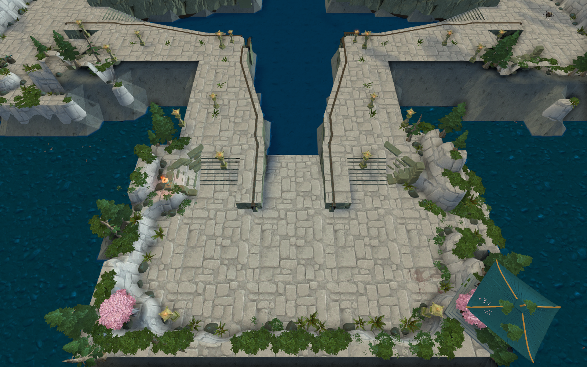

<!doctype html><html lang="zh-CN"><meta charset="utf-8"><meta name="viewport" content="width=device-width,initial-scale=1"><title>主岛 · 二层至三层楼梯修复</title>
<style>body{margin:0;background:#111723;color:#e2e5e7;font:17px/1.75 system-ui,sans-serif}main{max-width:1360px;margin:auto;padding:30px 24px}h1{font-size:30px}p,figcaption{color:#b5c0ca}img{width:100%;display:block;border-radius:6px}figure{margin:28px 0}a{color:#dbbb97}button{background:#2a3648;color:#eee;border:1px solid #62758a;border-radius:5px;padding:9px 16px;cursor:pointer;margin-right:12px}</style>
<main><h1>主岛 · 二层至三层楼梯修复</h1><p>缩回侧楼梯上方多余的护岸盖板，补齐连续台阶，恢复二层城门平台通往三层防御塔平台的连接。</p>
<figure><a href="tower_stairs.png"></a><figcaption>侧楼梯近景 · 两侧恢复上下层连接。</figcaption></figure>
<figure><figcaption>四岛全貌 · 相同镜头对比</figcaption><p><button onclick="show(false)">修复后</button><button onclick="show(true)">修复前</button></p></figure>
<p><a href="verification.json">查看八条侧楼梯的高度与通行检查</a></p></main>
<script>const stamp='?v='+Date.now();for(const img of document.images)img.src+=stamp;function show(before){document.getElementById('comparison').src=(before?'before_tower_stair_fix/':'')+'central_island.png'+stamp;}</script></html>
